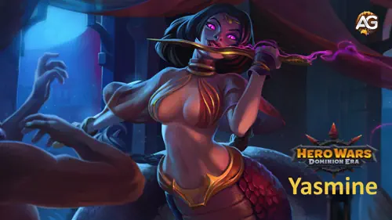
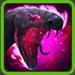
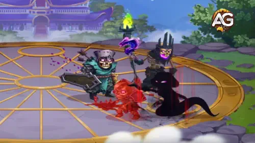
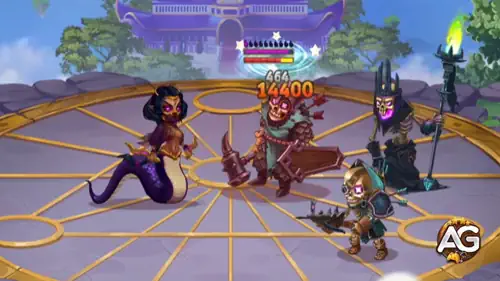
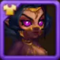

Yasmine Guide für Hero Wars: Dominion Era: beste Builds, Teams und Counter
- By: Alexandre Domingos. .
Yasmine ist eine starke Frontkämpferin in Hero Wars: Dominion Era. Mit tödlichem Schaden, Ausweichen und Beweglichkeit als Hauptattribut ist sie perfekt für schnellen Fortschritt in der Kampagne und zugleich eine ausgezeichnete Wahl gegen Osh, den Boss von Asgard.
Für Einsteiger ist sie oft früh im Spiel vergünstigt erhältlich und damit von Anfang an eine wertvolle Investition. Falls nicht, kann sie über Events oder besondere Truhen erhalten werden. Dieser Guide erklärt alles, was du wissen musst, um Yasmines tödliche Fähigkeiten optimal zu nutzen.

Wer ist Yasmine?
Jahre in der Sklaverei ließen sie vergessen, wie man liebt, und ersetzten sanfte Gefühle durch Bitterkeit und Trotz. Die Lieblingstänzerin ihres Meisters und zugleich seine gefährlichste Waffe: Das war Yasmine. Nun, da die junge Frau entkommen ist, schreit ihre verwundete Seele nach Vergeltung.
- Klasse: Kriegerin
- Position: Kämpft in der Frontreihe
- Hauptattribut: Beweglichkeit
Yasmine — Maximale Werte in Hero Wars: Dominion Era
| Attribut | Wert | Attribut | Wert |
|---|---|---|---|
| Intelligenz |
 2,790
2,790
|
Beweglichkeit |
 17,935
17,935
|
| Stärke |
 2,987
2,987
|
Gesundheit |
 410,325
410,325
|
| Physischer Angriff |
 89,672
89,672
|
Magischer Angriff |
 8,370
8,370
|
| Rüstung |
 32,986
32,986
|
Magieverteidigung |
 9,775
9,775
|
| Ausweichen |
 11,857
11,857
|
Kritische Trefferchance |
 14,135
14,135
|
| Präzision |
 17,935 (Hauptattribut)
17,935 (Hauptattribut)
|
Krit-Resistenz |
 17,935 (Hauptattribut)
17,935 (Hauptattribut)
|
| Rüstungsdurchdringung |
 27,040
27,040
|
Macht |
 200,921
200,921
|
Yasmine Vor- und Nachteile
Entdecke die Vor- und Nachteile von Yasmine im Kampf, basierend auf ihren Fähigkeiten und ihrer Spielweise in Hero Wars: Dominion Era.
Vorteile
- Hoher Einzelzielschaden: Ihre Fähigkeit „Tanz des Todes“ verursacht massiven Explosionsschaden auf ein einzelnes Ziel und ist ideal, um Schlüsselfiguren schnell auszuschalten.
- Debuff-Immunität während der Ult: Während „Tanz des Todes“ aktiv ist, kann Yasmine keine negativen Effekte erhalten und ist dadurch immun gegen Betäubungen, Verlangsamungen und Schweigen.
- Kritischer Giftschaden: „Umarmung des Schmerzes“ fügt mit jedem kritischen Treffer stapelbaren reinen Schaden über Zeit zu, sodass der Schaden auch nach dem Hauptangriff weiterläuft.
- Gutes Ausweichen und Überlebensfähigkeit: „Assassineninstinkt“ gewährt zusätzliches Ausweichen und mehr kritische Trefferchance, was ihre Überlebensfähigkeit und ihren konstanten Schaden verbessert.
- Anti-Heilung: Ihre passive Fähigkeit „Unbekanntes Toxin“ blockiert Heilung auf vergifteten Gegnern und macht sie stark gegen Teams mit viel Sustain.
Nachteile
- Verwundbar außerhalb der Ult: Wenn sie „Tanz des Todes“ nicht benutzt, kann sie leicht durch Kontrolleffekte oder Burst-Schaden ausgeschaltet werden.
- Schwach gegen Ausweich-Tanks: Yasmine ist darauf angewiesen, Treffer und Krits zu landen. Helden mit hohem Ausweichen wie Aurora oder Dante verringern ihre Effektivität deutlich.
- Geringe Flächenwirkung: Alle ihre Fähigkeiten konzentrieren sich auf ein einzelnes Ziel, was ihre Leistung gegen mehrere Gegner oder beschwörungsstarke Teams begrenzt.
- Benötigt hohen physischen Angriff: Ihr Schaden skaliert mit physischem Angriff, daher braucht sie starke Teamunterstützung und Investitionen in Glyphen und Artefakte, um zu glänzen.
- Wird stark von Support-Helden gekontert: Ohne Schutz kann sie von Helden wie Amira oder Helios neutralisiert werden.
Fähigkeiten: Yasmines tödliche Angriffe erklärt
Erfahre, wie Yasmines Fähigkeiten in Hero Wars: Dominion Era funktionieren und welche du zuerst leveln solltest, um maximale Effizienz zu erreichen.

Tanz des Todes
Yasmine lähmt den letzten Gegner, der sie angegriffen hat, für 3 Sekunden, teleportiert sich hinter ihn, trifft 7 Mal und versieht ihn mit einem Assassinenmal. Solange diese Fähigkeit aktiv ist, kann sie keine Debuffs erhalten. Danach kehrt sie an ihre ursprüngliche Position zurück und greift das markierte Ziel weiter an.
Das ist Yasmines wichtigste Schadensfähigkeit und das Herzstück ihres Gameplays. Sie verursacht massiven Einzelzielschaden und macht sie während der Aktivierung unantastbar.
Schadensformel: 40% Physischer Angriff + 40 × Level pro Treffer.
Berechneter Schaden: 0.4 × 89,672 + 40 × 130 = 41,069 Schaden pro Treffer. Da die Fähigkeit 7 Mal trifft, liegt der gesamte Burst-Schaden bei ungefähr 287,482 vor Verteidigungswerten.
Entwicklungspriorität: 1 (höchste) — Diese Fähigkeit definiert Yasmines gesamte Strategie. Ein frühes Upgrade erhöht sowohl ihren Burst-Schaden als auch ihre Überlebensfähigkeit stark.

Assassineninstinkt
Wenn Tanz des Todes eingesetzt wird, erhält Yasmine für 10 Sekunden zusätzliche kritische Trefferchance und Ausweichen. Dadurch ist sie schwerer zu treffen und landet häufiger kritische Treffer.
Diese Fähigkeit stärkt sowohl ihre Offensive als auch ihre Defensive, besonders in den gefährlichsten Momenten direkt nach ihrer Ult.
Effektformel: 40% Physischer Angriff + 40 × Level + 500 als Bonus auf kritische Trefferchance und Ausweichen.
Berechneter Bonus: 0.4 × 89,672 + 40 × 130 + 500 = 41,569 zusätzliche kritische Trefferchance und 41,569 Ausweichen für 10 Sekunden.
Entwicklungspriorität: 2 — Eine starke Folgeinvestition, um ihre Überlebensfähigkeit zu erhöhen und mehr Giftstapel durch Krits zu sichern.
Umarmung des Schmerzes
Yasmines kritische Treffer vergiften Gegner. Wird ein vergifteter Gegner erneut getroffen, wird die Giftdauer zurückgesetzt und der Schaden stapelt sich bis zu 10 Mal. Jeder Giftstapel verursacht reinen Schaden über Zeit.
Diese Fähigkeit fügt in langen Kämpfen konstanten Schaden hinzu. Das stapelnde Gift kann Gegner besiegen, selbst wenn sie ihre Hauptfähigkeit überleben.
Schadensformel: 33% Physischer Angriff + 30 × Level reiner Schaden pro Giftstapel alle 5 Sekunden.
Berechneter Schaden: 0.33 × 89,672 + 30 × 130 = 33,492 reiner Schaden pro Stapel alle 5 Sekunden. Bei 10 Stapeln steigt das auf ungefähr 334,918 reinen Schaden alle 5 Sekunden vor Reinigung oder Minderung.
Entwicklungspriorität: 3 — Stark, aber stark abhängig von kritischen Treffern. Level diese Fähigkeit nach ihrem Hauptangriff und ihrer Krit-Rate.

Unbekanntes Toxin
Von Yasmine vergiftete Gegner erhalten weniger Heilung. Jedes Mal, wenn sie geheilt werden, wird ein Teil der Heilung auf Basis von Yasmines Werten blockiert.
Diese Fähigkeit ist nützlich gegen Teams mit viel Heilung, bleibt aber situativ und erhöht ihren Schaden nicht direkt.
Formel für Heilungsblock: 20% Physischer Angriff + 30 × Level + 500 blockierte Heilung pro Heilung.
Berechneter Effekt: 0.2 × 89,672 + 30 × 130 + 500 = 22,334 blockierte Heilung jedes Mal, wenn ein vergifteter Gegner geheilt wird.
Entwicklungspriorität: 4 (niedrigste) — Hilfreich in bestimmten Kämpfen, aber die am wenigsten wichtige Fähigkeit für rohen Schaden. Diese solltest du zuletzt leveln.
Beste Patronage für Yasmine in Hero Wars: Dominion Era
Entdecke die besten Pets für Yasmine, um ihren kritischen Schaden, ihre Energiegewinnung und ihren reinen Schaden in Hero Wars: Dominion Era zu maximieren.
1. Platz: Fenris

Fenris ist das beste Pet für Yasmine, da es perfekt mit ihrem burstlastigen Spielstil harmoniert. Fenris erhöht physischen Angriff und Rüstungsdurchdringung, beides essenziell für Yasmines Fähigkeiten, besonders für „Tanz des Todes“. Zusätzlich gibt ihm seine Bonusfähigkeit die Chance, Gegner mit Basisangriffen zu blenden, was die Gegner stört und Yasmines Überlebensfähigkeit in längeren Kämpfen verbessert.
2. Platz: Cain

Cain ist eine starke Alternative, besonders wenn du Yasmines Ausweichen maximieren willst. Cain erhöht sowohl Ausweichen als auch physischen Angriff, was hervorragend mit „Assassineninstinkt“ zusammenpasst. Mehr Ausweichen bedeutet mehr Energie durch Cains Bonusfähigkeit, wodurch Yasmine ihre Ult schneller einsetzen kann. Im reinen Schadensoutput bleibt Cain jedoch etwas hinter Fenris zurück.
3. Platz: Albus

Albus verstärkt den reinen Schaden des Helden und verbessert damit Yasmines Gifteffekt aus „Umarmung des Schmerzes“. In langen Kämpfen oder gegen stark gepanzerte Gegner ist das nützlich, aber Albus ist situativer und verstärkt weder Yasmines Burst noch ihre Überlebensfähigkeit so gut wie Fenris oder Cain. Besonders sinnvoll ist Albus, wenn du Gifteffekte in langen Bosskämpfen oder gegen Tanks mit viel Leben maximieren willst.
Beste Skin für Yasmine in Hero Wars: Dominion Era
Der Mythische Skin ist unsere offensive Priorität für Yasmine: Er gewährt 21,300 Rüstungsdurchdringung und erhöht den Gesamtwert von 5,740 auf 27,040, etwa das 4,71-Fache des bisherigen Werts. Das ist eine große Verbesserung gegen gepanzerte Ziele; der tatsächliche Schadensgewinn hängt von der gegnerischen Rüstung ab.
Die Skins folgen der Reihenfolge der Charakterdaten. Die Prioritätsnummern zeigen die empfohlene Ausbaureihenfolge.

Standard-Skin (Beweglichkeit +1,365)
Erhöht Beweglichkeit, Yasmines Hauptattribut. Jeder Punkt verleiht 3 physischen Angriff und 1 Rüstung, was diesen Skin zu einer hervorragenden Gesamtverbesserung für Offensive und Überlebensfähigkeit macht.
Ausbaupriorität: 3 - Nach dem Mythischen und dem Dämonischen Skin ausbauen, um ihr Hauptattribut zu stärken.

Dämonischer Skin (Physischer Angriff +7,095)
Erhöht Yasmines Schaden direkt. Unverzichtbar, um Tanz des Todes und andere physische Fähigkeiten zu maximieren.
Ausbaupriorität: 2 - Verbessert Schaden und Fähigkeiten, die mit Physischem Angriff skalieren.

Romantischer Skin (Kritische Trefferchance +2,960)
Erhöht die Chance auf kritische Treffer und macht es leichter, Gifteffekte mit Umarmung des Schmerzes anzuwenden.
Ausbaupriorität: 4 - Verbessert kritische Treffer nach den wichtigsten offensiven Upgrades.
Maskenball-Skin (Rüstung +10,650)
Gibt viel Rüstung und hilft Yasmine, gegen Teams mit physischem Schaden zu überleben, erhöht aber ihre Offensive nicht.
Ausbaupriorität: 6 - Spätere defensive Investition; bei Überlebensproblemen durch physischen Schaden vorziehen.

Kybernetischer Skin (Ausweichen +2,960)
Verbessert ihr Ausweichen und harmoniert mit Cain sowie mit Yasmines Fähigkeit, Basisangriffen auszuweichen. So steigt ihre Chance, länger am Leben zu bleiben.
Ausbaupriorität: 5 - Nach offensiven Skins ausbauen, bei Überlebensproblemen auch früher.
")
Mythischer Skin (Rüstungsdurchdringung +21,300)
Mit dem Mythischen Skin trifft Yasmine gepanzerte Gegner härter. Ihre physischen Angriffe werden gefährlicher, sodass sie Ziele leichter ausschalten kann, die ihre Angriffsserie bisher überlebt haben.
Kosten für den maximalen Ausbau: 110,520 Beweglichkeits-Skinsteine.
Ausbaupriorität: 1 - Höchste - Erste Wahl gegen gepanzerte Ziele. Berücksichtige die höheren Kosten bei der Verteilung deiner Skinsteine.
Liga-Arena-Skin (Kosmetisch)
Keine Attributboni. Wähle ihn wegen seines Aussehens.
Priorität beim Leveln von Yasmines Artefakten
Entdecke die beste Artefakt-Priorität für Yasmine in Hero Wars: Dominion Era, basierend auf der Synergie mit ihren kritbasierten Assassinenfähigkeiten und ihrer Gesamtleistung im Kampf.

1. - Waffe: Concubine's Khanjars
Dieses Artefakt erhöht Yasmines kritische Trefferchance und hat im Kampf eine Aktivierungsrate von 100%. Da Yasmine stark von Krits abhängt, um Gift auszulösen und Burst-Schaden zu verursachen, ist diese Waffe essenziell für ihre Offensive.
Entwicklungspriorität: Sehr hoch - Kernstück für ihren Schaden und ihre Giftmechanik. Sollte als erstes maximiert werden.

2. - Buch: Warrior's Code
Dieses Artefakt steigert sowohl kritische Trefferchance als auch physischen Angriff. Es unterstützt Yasmines Burst-Potenzial passiv und skaliert sehr gut mit ihrem beweglichkeitsbasierten Kit.
Entwicklungspriorität: Hoch - Eine starke sekundäre Verbesserung für ihren kritischen und physischen Schaden.

3. - Ring: Ring of Agility
Der Ring erhöht Beweglichkeit, Yasmines Hauptattribut. Jeder Punkt Beweglichkeit verleiht ihr +2 physischen Angriff, +1 Rüstung und zusätzlich +1 physischen Angriff, weil Beweglichkeit ihr Hauptattribut ist. Insgesamt sind das +3 physischer Angriff pro Punkt. Das ist ein solider Werteschub, aber weniger unmittelbar als kritfokussierte Artefakte.
Entwicklungspriorität: Mittel - Wichtig für langfristige Skalierung, aber weniger dringend als Krit-Artefakte für sofortigen Schaden.
Priorität beim Leveln von Yasmines Glyphen
Entdecke die beste Glyphen-Priorität für Yasmine in Hero Wars: Dominion Era. Konzentriere dich auf die Glyphen, die ihren kritischen Schaden, ihre Überlebensfähigkeit und ihre Assassinenrolle verbessern.
1. - Glyphe: Physischer Angriff
Yasmines Hauptschaden kommt von physischen Angriffen, vor allem von ihrer Multi-Hit-Ult und ihren kritischen Giftschlägen. Mehr physischer Angriff verbessert direkt alle offensiven Fähigkeiten.
Entwicklungspriorität: Sehr hoch - Unverzichtbar, um ihren Schaden zu maximieren.
2. - Glyphe: Kritische Trefferchance
Yasmine verlässt sich stark auf kritische Treffer, um ihr Gift auszulösen und Gegner schnell auszuschalten. Mehr kritische Trefferchance verbessert ihre Fähigkeit, Ziele zu erledigen.
Entwicklungspriorität: Hoch - Unterstützt die Skill-Synergie und ihre Gifffekte.
3. - Glyphe: Beweglichkeit
Beweglichkeit ist Yasmines Hauptattribut und erhöht ihren physischen Angriff sowie ihr Ausweichen. Jeder Punkt gibt +2 physischen Angriff, +1 Rüstung und +1 zusätzlichen physischen Angriff für beweglichkeitsbasierte Helden.
Entwicklungspriorität: Mittel - Solide Skalierung der Werte, aber weniger direkt spürbar als Krit und physischer Angriff.
4. - Glyphe: Ausweichen
Ausweichen erlaubt Yasmine, physischen Basisangriffen zu entgehen, was ihre Überlebensfähigkeit gegen physische Teams verbessert. Die Wirkung bleibt jedoch situativ.
Entwicklungspriorität: Niedrig - Defensiv nützlich, aber zu Beginn nicht essenziell.
5. - Glyphe: Gesundheit
Mehr Gesundheit hilft Yasmine zwar, länger zu überleben, aber ihre beste Verteidigung ist es, Bedrohungen schnell auszuschalten. Sie lebt eher von Ausweichen als von Tankiness.
Entwicklungspriorität: Sehr niedrig - Die am wenigsten wirkungsvolle Glyphe für ihre Assassinenrolle.
Wie man Yasmine kontert – Hero Wars: Dominion Era
Amira – Direkter Counter

Amira schaltet Yasmine aus, indem sie dafür sorgt, dass all ihre kritischen Treffer 7 Sekunden lang verfehlen. Da Yasmines Gift und Burst stark von Krits abhängen, wird ihre Offensive in diesem Zeitraum praktisch komplett ausgeschaltet.
Celeste – Support-Counter

Celeste entfernt Yasmines Gift und verhindert Debuffs mit ihrer Fähigkeit „Limbo“. So hält sie das Team frei von Schaden über Zeit und Heilungsblock.
Corvus – Tank-Falle

Corvus bestraft Yasmine für ihre schnellen Mehrfachtreffer. Sein „Altar of Souls“ reflektiert reinen Schaden, wenn sie seine Verbündeten angreift, wodurch sie sich oft selbst sehr schnell erledigt.
Gesichtsloser – Stör-Counter

Gesichtsloser betäubt Yasmine mit „Power Throw“ und unterbricht so ihre Angriffsfolge. Durch Umpositionierung und Schadensverzögerung gewinnt dein Team Zeit, um zu reagieren oder sie auszuschalten.
Helios – Hard Counter

Helios kontert kritische Treffer mit „Flaming Retribution“. Da Yasmine extrem auf Krits angewiesen ist, erleidet sie bei jedem Schlag starken magischen Schaden und geht oft an ihrer eigenen Offensive zugrunde.
Beste Kriegsflaggen für Yasmine in Hero Wars
Die besten Kriegsflaggen für Yasmine erhöhen ihren Burst, ihre Überlebensfähigkeit und ihren Anti-Heal-Nutzen, verbessern die Uptime ihrer Ult und machen ihr Gift tödlicher.

War Flag of Swift Warriors:
Verkürzt die Abklingzeiten von Fähigkeiten für Krieger um 5%, wodurch Yasmine ihre Ult häufiger einsetzen und insgesamt schneller Schaden verursachen kann.
Nutzen für Yasmine und das Team: Kürzere Cooldowns erlauben es Yasmine, „Tanz des Todes“ öfter zu nutzen, Prioritätsziele auszuschalten und Giftstapel zu erneuern. Das verstärkt sowohl Einzelziel-Kills als auch längere Schadensphasen.

War Flag of Decline:
Reduziert die Heilung des gegnerischen Teams um 10%, was hervorragend mit Yasmines Gift und Anti-Heal-Effekt zusammenarbeitet.
Nutzen für Yasmine und das Team: Decline macht Giftstapel und reinen Schaden deutlich tödlicher gegen Sustain-lastige Gegner und hilft Yasmine, Kills zu sichern, die sonst wieder hochgeheilt würden.

War Flag of Frost:
Senkt regelmäßig für einige Sekunden die Fertigkeitslevel der Gegner um 2, stört gegnerische Kombos und verzögert wichtige Ultimates.
Nutzen für Yasmine und das Team: Frost hilft Yasmine zu überleben und Zeitfenster auszunutzen, in denen Gegner sie nicht kontern oder betäuben können. Ideal im PvP, um Heiler oder Kontrollketten zu unterbrechen, während Yasmine Ziele erledigt.
Beste Teams für Yasmine - Hero Wars: Dominion Era
| Yasmine - Bestes Team #1 | |||||
|---|---|---|---|---|---|
| #1 |
|
|
|
|
|
|
|
|
|
|
|
|
Fazit zum Yasmine Guide
Yasmine ist eine tödliche Assassinin in Hero Wars: Dominion Era, die Backline-Gegner mit mächtigen kritischen Treffern ausschalten kann. Um ihren Einfluss zu maximieren, investiere gezielt in ihre Glyphen, Artefakte und Skins und baue Teams, die ihre Stärken unterstützen und ihre Schwächen abdecken. Mit der richtigen Unterstützung und Strategie kann sie sowohl im Angriff als auch in der Verteidigung spielentscheidend sein.
Entdecke neue Fähigkeiten mit unseren empfohlenen Helden
 Aidan Guide für Hero Wars: Dominion Era – Fähigkeiten, Builds und beste Teams
Aidan Guide für Hero Wars: Dominion Era – Fähigkeiten, Builds und beste Teams Augustus Guide für Hero Wars: Dominion Era - bester Build und Strategie
Augustus Guide für Hero Wars: Dominion Era - bester Build und Strategie Der ultimative Wuschel Guide für Hero Wars: Dominion Era
Der ultimative Wuschel Guide für Hero Wars: Dominion EraHinterlasse deine Meinung
Hat dir unser Yasmine Guide für Hero Wars Web und Facebook gefallen? Gibt es etwas, das du nicht verstanden hast oder das du gern geändert sehen würdest? Wir laden dich ein, an der Kommentar-Sektion der Alexandre Games Blog-Seite teilzunehmen. Teile gern deine Meinung, stelle Fragen und schicke uns deine Vorschläge.
Klicke auf den Button unten, um zu beginnen: